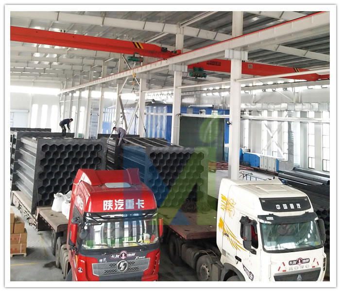

江西华邦复合材料有限公司专业从事电除雾器、湿式电除尘器及阳极管等除尘设备的研发生产
 13870005775
1387000577513870005775
邮箱：jiangxihb@163.com3月20日，李克强总理主持召开国务院常务会议，确定《政府工作报告》责任分工等。会议决定，从2019年1月1日至2021年底，对从事污染防治的第三方企业，减按15%税率征收企业所得税。
对从事污染防治的第三方企业，减按15%税率征收企业所得税
国务院总理李克强3月20日主持召开国务院常务会议，确定《政府工作报告》责任分工，强调狠抓落实确保完成全年发展目标任务；明确增值税减税配套措施，决定延续部分已到期税收优惠政策并对扶贫捐赠和污染防治第三方企业给予税收优惠。
会议指出，要深入贯彻刚刚闭幕的全国两会精神，认真学习习近平总书记在两会期间的重要讲话，落实十三届全国人大二次会议通过的《政府工作报告》各项部署。会议将《政府工作报告》提出的重点任务逐项分解，明确责任单位和时限，要求国务院各部门以对人民高度负责的精神，不折不扣抓好落实，奋力完成全年经济社会发展主要目标任务。一要突出重点。各部门要紧扣深化改革开放、简政减税降费、优化公平营商环境、培育新动能等，尽快出台细化措施。二要抓紧推进。已确定的工作和政策要尽快落地、资金尽快下达，坚持结果导向，及时了解政策实施中的企业反应、群众呼声，确保工作早见效、市场主体有感受。三要协同发力。各部门要从大局出发，加强相互配合和政策配套。完善督办机制，坚决防止工作推进中“跑偏走样”、不作为等问题。以有力有效抓落实不断激发市场活力、增强市场主体信心，顶住下行压力，保持经济平稳运行，推动高质量发展。
为落实《政府工作报告》更大规模减税的部署，围绕从4月1日起将制造业等行业16%增值税率降至13%、交通运输和建筑等行业10%增值税率降至9%的举措，会议决定，一是进一步扩大进项税抵扣范围，将旅客运输服务纳入抵扣，并把纳税人取得不动产支付的进项税由分两年抵扣改为一次性全额抵扣，增加纳税人当期可抵扣进项税。对主营业务为邮政、电信、现代服务和生活服务业的纳税人，按进项税额加计10%抵减应纳税额，政策实施期限暂定截至2021年底。确保所有行业税负只减不增。二是对政策实施后纳税人新增的留抵税额，按有关规定予以退还。三是相应调整部分货物服务出口退税率、购进农产品适用的扣除率等。同时，加大对地方转移支付力度，重点向中西部地区和困难县市倾斜。
为发挥减税政策对改善民生和打好三大攻坚战的支持作用，会议还决定，一是延续2018年执行到期的对公共租赁住房、农村饮水安全工程建设运营、国产抗艾滋病病毒药品等的税收优惠政策。二是从今年1月1日至2022年底，对企业用于国家扶贫开发重点县、集中连片特困地区县和建档立卡贫困村的扶贫捐赠支出，按规定在计算应纳税所得额时据实扣除；对符合条件的扶贫货物捐赠免征增值税。三是从2019年1月1日至2021年底，对从事污染防治的第三方企业，减按15%税率征收企业所得税。

日前，天津印发《2019年天津生态环境工作要点》。文件提出，打好蓝天保卫战。完成荣程钢铁、天钢联合特钢2家钢铁企业烧结等重点工序超低排放改造，完成天钢集团、钢管集团2家钢铁企业4项治理改造任务并加快推动超低排放改造。完成全市22套公共煤电机组冷凝脱水深度治理和168台燃气锅炉低氮改造工程，全文如下：
2019年天津生态环境工作要点
2019年是新中国成立70周年，是打好污染防治攻坚战、决胜全面建成小康社会的关键一年。为深入贯彻习近平生态文明思想，全力改善我市生态环境质量，扎实做好2019年生态环境工作，现提出如下工作安排：
一、总体要求
以习近平新时代中国特色社会主义思想为指导，全面贯彻党的十九大和十九届二中、三中全会精神，全面落实市第十一次党代会、十一届四次、五次全会精神，以全国生态环境保护大会和习近平生态文明思想为遵循，以打好污染防治攻坚战为主线，聚焦污染防治和生态建设，集中力量打好蓝天、碧水、净土三大保卫战，助力服务高质量发展，着力解决突出环境问题，全力保障生态环境安全，全面深化生态文明体制改革，努力展现新时代生态环境保护的新担当新作为。
二、工作目标
2019年，牢牢守住生态环境质量只能更好、不能变坏的底线要求，全面落实污染防治攻坚任务，全市PM2.5年均浓度持续改善，地表水达到并优于Ⅲ类水质断面达到40%、劣Ⅴ类水质断面占比均达到25%。近岸海域水质稳中向好，完成国家下达总量减排任务。
三、重点任务
（一）服务高质量发展
加强源头管控。基本完成区域空间生态环境评价，制定生态保护红线、环境质量底线、资源利用上线、生态环境准入清单。严禁钢铁、焦化、水泥、电解铝、平板玻璃等行业新增产能；严格控制新建、改建、扩建涉及大宗物料运输的建设项目。实施精准化服务。进一步整合优化生态环境行政许可事项和审批程序，实行重大项目环评技术评估跟踪式服务。建立健全环境治理服务平台，促进环境治理需求与供给有效对接，指导企业制定科学的环境治理解决方案。实行秋冬季工业企业差别化错峰生产，按不限产、不同比例限产、全部停产划分为3-5类。生态环保“领跑者”企业可不实行错峰生产、不采取应急减排。
（二）打好污染防治攻坚战
01
全力打好蓝天保卫战。严格落实《打赢蓝天保卫战三年作战计划（2018-2020年）》，与生态环境部对标对表，提前谋划2019年重点工作任务，测算年度空气质量改善目标。深化“五控”治理，严格落实超低排放监管力度，完成荣程钢铁、天钢联合特钢2家钢铁企业烧结等重点工序超低排放改造，完成天钢集团、钢管集团2家钢铁企业4项治理改造任务并加快推动超低排放改造。完成全市22套公共煤电机组冷凝脱水深度治理和168台燃气锅炉低氮改造工程，持续实施区域降尘量考核，推进柴油施工机械和作业机械清洁化改造，继续淘汰老旧车，妥善应对重污染天气。建立重污染应急管控清单动态更新机制，持续细化“一厂一策”，确保应急减排措施可操作、可核查。加强重污染天气预警会商和京津冀及周边地区区域联动，遇不利天气及时启动应急机制，确保启动迅速、响应及时，将不利气象条件影响降至最低。落实国家部署要求，深化碳排放权交易市场建设，推动试点市场向全国市场过渡。
02
全力打好碧水保卫战，深入实施饮用水源地保护、黑臭水体治理、渤海综合治理攻坚战。深化工业集聚区水污染集中治理，实施18个氮磷排放重点行业企业超标整治。建成咸阳路、东郊等污水处理厂，加快消除污水管网空白区，建成区污水基本实现全收集、全处理，全市污水日处理能力达到368万吨。全面摸清重点河道湖库沿线入河排污口，推进合流制地区雨污水分流改造，巩固建成区黑臭水体治理成效，完成建成区外40%黑臭水体治理工程。开展饮用水水源地环境保护专项行动，推进规范化建设，开展万人千吨农村集中式饮用水水源地专项整治。统筹陆海污染防治，下大力气抓好入海排污口“查、测、溯、治”重点任务，大幅降低陆源污染物入海量，加快启动垃圾分类和“海上环卫”机制，推进水产养殖污染治理，实行近岸海域养殖区、限养区、禁养区三级管控，强化河口海湾等生态修复。加快渤海综合治理，启动湾长制建设，开展入海排污口溯源排查及达标整治，实行入海污染物总量控制。
03
全力打好净土保卫战，全面实施《土壤污染防治法》，完成农用地土壤污染状况详查报告，继续推进重点行业企业用地调查，更新公布天津市污染地块名录，加快推动受污染建设用地治理，重点推动天津农药总厂、同生化工厂土壤修复。加强农村农业污染防治，完成125个建制村环境综合整治工作任务。
（三）巩固提升生态环保督察成果
01
深入中央环保督察整改落实工作。加快推动14项未完成的任务整改落实，持续用力推进整改，确保督察问题不反弹，整改成效经得起检验。切实抓好市级生态环境保护督察整改落实工作。督促各区、各部门制定整改方案，实施清单管理、定期调度、及时通报。
02
完善常态化督察监察机制。优化整合驻区督办检查组，紧盯问题、紧抓整改，确保落地见效。组织开展专项督察、“回头看”。针对大气、渤海、农村污染治理等重点领域，适时组织开展专项督察，加大攻坚力度，平稳有序推进各项攻坚战，针对整改不力、成效不明显的区，适时进行“回头看”，督促问题整改到位。
03
加大重点领域监管执法。切实做好生态环境领域综合行政执法改革工作，厘清监管职责、明确执法边界。围绕打好污染防治攻坚战重点领域，突出环境质量不降反升、执法力度弱等重点区域，聚焦生态环境保护热点和群众反映焦点问题，开展集中执法行动，深化环境行政执法和刑事司法联动，用好用足按日连续计罚、查封扣押、限产停产等强制手段，严厉打击各类环境监测数据弄虚作假行为，严厉打击各种环境违法犯罪行为。
（四）保障生态环境安全
01
完成全市生态保护红线勘界定标阶段任务，实现生态保护红线精准落地，启动生态保护红线监管平台建设。编制《天津市双城间绿色生态环境保护规划》，严格分区分级管控，助力推动构筑双城间绿色生态屏障。开展自然保护区“绿盾2019”专项行动，发现问题限期整治修复。
02
加强固体废物管理，坚决禁止洋垃圾入境，全面贯彻国家要求，确保进口固体废物管理各项改革任务按期完成，严厉打击涉固体废物违法犯罪行为。严格实行重金属排放总量控制，防范重金属污染风险。
03
做好辐射环境安全监督检查和历史遗留的废旧放射性物质收贮工作，监督检查和收贮率达到100%。推动全市高风险移动放射源在线监控建设工作，督促指导相关区开展辐射应急演练工作。
（五）推进京津冀联建联防联治
01
积极推进京津、津冀新一轮协同发展合作框架协议实施，全面支持雄安新区生态环境建设，加强区域空气重污染、水污染防治应急联动，加快碳排放权交易市场建设，推动签订第二轮引滦上下游生态补偿协议。
02
主动推进生态环境保护机制创新，加强区域、流域污染协同治理，发挥人才、技术、标准优势，积极引领区域大气污染治理，全力争取、积极承接流域海域监管机构。
03
共同打好渤海污染综合治理攻坚战，共同推进绿色港口建设，妥善解决跨界、飞地环境管理体制障碍。
四、保障措施
（一）加快实施机构改革。
完成生态环境机构改革，调整生态环境保护管理体制，建立健全高效协调运行机制。推进生态环境保护综合行政执法改革，组建生态环境保护综合执法队伍，落实执法用车，统一执法着装，提升执法权威，推动各区落实“公安驻环保工作组”制度。争取生态环境部海河流域水生态环境保护机构、渤海生态环境监管机构支持，协调推动海河流域水污染防治。
（二）健全法规制度体系。
推动颁布实施《天津市生态环境保护条例》，加快制定机动车和非道路移动机械排气、土壤污染防治条例，推动噪声污染防治条例立法工作，颁布实施《恶臭污染物排放标准》等地方环保标准。推动生态环境损害赔偿制度改革工作深入实施，配套制定生态环境损害鉴定评估、赔偿磋商、资金管理和信息公开等操作办法。加快汽车制造等23个行业排污许可证核发，加强证后监管。建立完善生态环境保护领跑制度，大力推行环境污染第三方治理，鼓励支持环保产业发展壮大。
（三）创新管理技术手段。
深入开展大气、水等重点环境问题成因与治理技术攻关；开发水污染防治、核与辐射、噪声、移动源、排污许可、应急监测，升级移动执法、行政处罚等业务监管系统，进一步扩大生态环境信息化支撑覆盖面，对大数据应用夯实基础。基本完成我市第二次全国污染源普查工作。健全重点排污单位自行监测及环境信息公开监管体系，将行政处罚信息录入市场主体信用信息公示系统，实施联合惩戒。
（四）加强环境宣传。
增强环保新闻宣传的时、效、度，提高每次新闻发布会和政策解读会的影响力，确保至少召开12次新闻发布会，及时通报工作进展、发布环境信息、解读政策措施、回应舆论热点。围绕打好污染防治攻坚战八大作战计划和生态环境部各专项行动，组织大型主题采访。围绕各项执法专项行动，组织伴随式采访，特别是在秋冬季大气污染综合治理攻坚行动期间，至少每月组织一次。持续曝光违法问题，在生态环境局网站和双微开设“曝光台”。
五、全面加强党的建设
（一）牢牢把握“根本遵循”。
坚持用习近平新时代中国特色社会主义思想武装头脑，深入开展“不忘初心、牢记使命”主题教育，推进“两学一做”学习教育常态化制度化。坚持学懂弄通做实，在学深悟透、务实戒虚、整改提高上持续发力，把教育成果转化为坚定理想信念、砥砺党性心性、忠诚履职尽责的思想自觉和实际行动。
（二）坚决做到“两个维护”。
以党的政治建设为统领，以“三个着力”为元为纲，坚决贯彻落实习近平总书记重要指示批示精神。严格贯彻执行党章和其他党内法规，严明政治纪律和政治规矩，加大监督执纪和问责力度。认真贯彻落实习总书记要求做到“三个表率、一个模范”的重要指示精神，进一步严肃党内政治生活，发展积极健康的党内政治文化，营造海晏河清的政治生态。
（三）持续抓好“专项整治”。
深入开展不作为不担当问题专项治理和形式主义官僚主义集中整治工作，持续巩固拓展整治“四风”成果，严肃查处空泛表态、应景造势、敷衍塞责、出工不出力以及发生在群众身边腐败和作风问题。围绕群众急难愁盼问题，察实情、出实招、办实事、求实效。深入开展调查研究，提高战略思维、战略把握、战略谋划和战略运作能力。
（四）全面提升“基层组织力”。
认真贯彻落实新时代党的组织路线和《中国共产党支部工作条例（试行）》，严肃党内政治生活，着力提升自我净化、自我完善、自我革新、自我提高的水平。突出抓好“三会一课”、组织生活会、民主评议党员、谈心谈话、请示报告等制度落实，履行好教育党员、管理党员、监督党员和组织群众、宣传群众、凝聚群众、服务群众职责，加强党支部标准化、规范化建设，推动全面提高、全面过硬。树立“党的一切工作到支部”的鲜明导向，全面实施提升工程三年行动计划，加强“五好党支部”建设，提升基层党的建设质量，为打好污染防治攻坚战提供坚强组织保证。
（五）要巩固发展“胜利成果”。
严格落实中央八项规定及其实施细则精神，从严查处顶风违纪行为。巩固“以案为鉴，营造良好政治生态”专项治理成果，落实巡视整改措施。着力在日常监督、长期监督上下功夫，贯通运用监督执纪“四种形态”，使监督常在、形成常态，增强斗争本领，打造忠诚干净担当的生态环境保护铁军。
本文来源于《天津生态环境》

GB29620-2013《砖瓦工业大气污染物排放标准》从2016年的7月1日起，要求排放颗粒物低于30mg的限值。同时，国家在环保上加强了管理力度，很多地区对砖瓦企业要求必须严格执行标准。不能达标排放的企业就必须停产。现在许多砖瓦企业虽然都已经安装了湿式脱硫除尘装置，但基本都做不到达标排放。所以因环保不达标被迫停产的企业不少。
电除雾器，是一种高效的超净化设备，可适用于高湿度，高酸度的烟气除尘，对砖瓦企业的由干燥室排出的湿烟气尤其适合。是目前电力行业超净排放的首选设备。它来源于硫酸生产行业中的硫酸气液分离器。现较广泛地应用于电厂及大型取暖锅炉的超净排放。但投资较大，每万M3风量的的设备投资达10~12万元，系统风阻小，仅为300Pa左右。电力消耗主要是高压放电消耗，每万风量的放电消耗大约为7-8kW.可用于湿式脱硫后的再净化处理。湿式电收尘器已经开始在砖瓦企业应用，取得了明显的达标效果。
山西砖瓦隧道窑湿电除雾器烟气量不大于100000m3/h，设计气速为1m/s。以下是湿电投入前后对比图

本套设备是为山东砖瓦隧道窑200000m3/h煤矸石烟气电除雾器，该高压静电湿式静电除尘器为塔后安装方式，是利用高压脉冲直流电、电场驱动烟气内微细烟尘，使其加速沉降于阳极表面，以除去烟气中的尘粒、雾滴、气溶胶及部分异味等，从而达到对烟气的净化。
该电除雾器入口烟气含尘量200mg/m³，出口烟气含尘≤15mg/m³，除尘效率≥92%，已通过当地环保部门验收。

山东砖瓦隧道窑200000m3/h煤矸石烟气电除雾器投入前后效果对比

近日，经过紧张的安装，山东制砖烟气电除雾器开始运行，该电除雾设备处理烟气量70000m3/h，设计气速1.14m/s，以上是调试前后效果对比图。

2*20万气量砖瓦窑烟气湿电除尘器运行案例
山东微山湿电除尘器项目是我司承接的制砖烟气玻璃钢湿电项目，助力用户实现了超低排放。相比其他湿电技术，玻璃钢管式湿电技术具有更好的耐腐蚀及低水耗性能，是当前砖厂废气湿式电除尘器的首选技术。该套湿电是针对2台200000m3/h气量设计，烟气入口含尘量200mg/m3，烟气烟温70℃，要求除尘器出口粉尘低于30mg/m3.目前已实现达标排放。

文献：《砖 家》 2016年10月 总第26期 文章来源：西安市窑炉设备研究所 作者：邵三虎
GB29620-2013《砖瓦工业大气污染物排放标准》从2016年的7月1日起，开始实施表2 的限值。同时，国家在环保上加强了管理力度，很多地区对砖瓦企业要求必须严格执行标准。不能达标排放的企业就必须停产。现在许多砖瓦企业虽然都已经安装了湿式脱硫除尘装置，但基本都做不到达标排放。所以今年因环保不达标被迫停产的企业不少。本文对砖瓦企业隧道窑难以达标的原因作一些粗浅的分析，并提出一些可以达标的技术方案，供同行们探讨。
1、烟气中氧含量对检测结果的影响：
环境监测部门在砖厂检测时，需要检测烟气中的氧含量。氧含量的检测，是为了防止稀释排放的一种监测手段。因为燃料煤的燃烧，实际上是一个剧烈的氧化过程，空气在参与燃烧以后，理论上空气中的氧气会完全消耗掉。所以，如果检测出的氧含量高，说明烟气中掺入的干净空气多了。为了能够准确地反映烟气的实际净化情况，需要把这部分干净空气从检测结果中剔除。氧含量的检测和折算系数的设定就是为了排除稀释空气对烟气检测结果的影响而设置的。
理论上讲，窑炉内污染物的总量是燃料煤在燃烧后产生的以及原材料中的某些成分在经历物理化学反应后释放出来的，和掺入的过量空气没有关系。氧含量的检测和折算只是真实地反映了烟气的实际污染情况。只是剔除了稀释空气对检测结果的干扰和影响。折算后所得的结果是烟气污染的实际情况。如果掺入的过量空气多了（即氧含量高了），污染物的实测值会减小，掺入的过量空气少了（即氧含量低了），污染物的实测值就会变大。因为这部分污染物的总值是固定的，无论是氧含量高还是氧含量低，它折算后的最后结果应该是基本一致的。
所以，氧含量的检测及折算系数的确定，对由燃料煤燃烧以及坯体原材料物理化学反应所产生的污染物，会排除稀释空气的影响，得到一个准确的污染物数值。但由于砖瓦窑炉本身运转时过量空气系数大，氧含量高的特殊性，致使折算系数很大。对烟气中的那些不是由于燃料煤产生污染物，会把检测数值放大，使得部分污染物的检测数值受到影响。例如颗粒物和氟化物。
烟气中氧含量对检测结果的影响：1）、对完全由燃料煤产生的污染物影响较小或几乎没有影响，例如SO2，NOx。稀释空气的掺入对实测结果的影响不大。2）、对不完全是由燃料煤燃烧形成的污染物，例如颗粒物和氟化物，有较大的影响。
目前看，对烟尘颗粒物的影响最大。原因是烟气中的颗粒物不完全是由燃料煤燃烧产生的，砖瓦窑炉中还有其他原因也会产生颗粒物污染。这些污染物和燃料煤燃烧所形成的烟尘颗粒物一并被作为烟气的颗粒物被氧含量折算放大了。其次是氟化物，目前环保部门大多没有把它列为主要监测物，所以目前得到的实测数据较少。但可以肯定的是，氟化物不仅燃料煤中有，某些地区的黏土、页岩原料中及地下水中还含有较高的氟化物。还有一些地区是高氟水区，例如陕西关中的北部地区就是高氟水区。这些地区烟气中所检出的氟化物不仅含有燃料煤产生的氟化物，还有黏土原料产生的氟化物，这些地区的砖瓦窑炉氟化物如果进行氟化物检测肯定是超标的。
2、隧道窑所排烟气中为什么颗粒物难以达标：
难以达标的原因：1）、砖厂的脱硫除尘设备简陋，不能达到升级后的标准要求；2）、砖瓦窑炉中，颗粒物的污染源不仅仅是燃料煤，还有烧成过程及干燥过程都会产生新的颗粒物；3）这些非燃料煤产生的污染物被折算系数放大了。
1）、砖瓦企业因在烟气净化这个问题上处于刚刚起步阶段，加之整个行业对环保问题重视不足，导致砖厂的脱硫除尘设备大都比较简陋，配套不足，难以满足新标准的要求。
目前大多数砖厂安装的都是一个单级的湿法脱硫除尘装置，比较简陋。如果与电力行业或锅炉行业来比较的话，可以说是非常简陋。虽然说湿法脱硫除尘器兼有除尘、脱硫及脱氟三大功能，但应该指出的是，湿式脱硫除尘装置的除尘效果是有选择性的。对于粉碎设备等产生的粉尘，除尘效率较高，而对于燃料煤燃烧后产生的烟尘颗粒物，其除尘效率较低。据电厂及锅炉行业的研究结果，水膜除尘对于烟尘的脱除效率仅为50%左右，且对微米级的烟尘细颗粒物的脱除效率还不足20%。（参考文献1，2）。锅炉行业的烟气排放标准，颗粒物的限值是50mg/m3，基准氧含量是9%，比砖瓦行业的颗粒物限值30mg/m3,以及基准氧含量8.65%都要松一些。即使这样，锅炉行业仅使用湿法脱硫除尘一级尚不能满足达标的要求。那么砖瓦行业中仅用一级简陋的湿法除尘脱硫器如何能够达到目前的高标准呢？北方取暖区的同仁们都能看得到，冬季取暖用的燃煤锅炉大都采用的是一级布袋除尘和一级湿法脱硫的标准配置。电厂锅炉以及热力站锅炉的烟气处理系统则更为复杂。电力行业现在已经提出超净化排放和零排放的概念。为了消除烟气中的烟尘颗粒物，除了布袋除尘器，还有高压静电除尘器，电袋复合除尘器，湿式电收尘器等多种收尘手段及设备。当然还必须配有脱硝系统等。所以，砖瓦企业不要指望只用一台简易的湿式除尘脱硫器就能达到现行标准的要求，必须有提高脱硫尤其是除尘水平的打算，增加烟气净化系统的投资预算。2013年9月，砖瓦排放标准发布时，环保部新闻发言人就曾提出，砖瓦企业的环保投资应占到砖厂总投资的12%左右（参考文献3），而现在砖瓦企业中，有几个在环保方面的投资能达到总投资的12%呢？
2）、砖瓦企业中颗粒物污染源不仅是由燃料煤燃烧后产生的
因为砖瓦窑炉是以煤及煤矸石等为主要燃料的，所以标准中所列的污染物数值是以燃料煤燃烧后产生的污染物制定的。有很多砖瓦行业内的人士认为，烧结砖大多数采用内掺燃料的形式，燃料煤燃烧后的灰分及灰渣被红砖固定下来了，基本不会产生烟尘颗粒物。即使有一些颗粒物，也会在干燥室中被干燥过程中的砖坯所吸收。所以在烟气处理中，基本上都是以脱硫为主，认为颗粒物不会超标。这个认识是有一定道理的。因为内掺燃料的原因，砖瓦企业所排的烟气中，基本见不到未燃烧尽的颗粒物，见不到黑烟。冬季取暖的燃煤锅炉，烟气如果处理不好，附近会见到漂散的黑灰，或是未燃烧尽的黑色煤渣。而在砖瓦厂所排的烟气是见不到这种污染物的。这个认知有一定道理，但是不全面。对于燃料煤中的挥发分在燃烧中产生的细微颗粒物及气溶胶颗粒物是砖坯固定不了的。而恰好是这种细微颗粒物和气溶胶颗粒物在目前的湿法脱硫除尘系统中的去除效果不佳。
砖瓦窑炉在焙烧过程中，颗粒物的来源不仅是燃料煤燃烧后产生的，制砖原料在焙烧转化在砖的过程中，也会产生颗粒物。这一现象的严重程度因烧结砖原料不同而有很大差异，在有些砖厂的脱硫液沉淀池中可以发现许多红色的砖灰颗粒物沉淀，就是这一现象的证明。
烧结砖瓦隧道窑的颗粒物，来源主要有5个方面，1、燃料煤燃烧后产生的烟尘颗粒物；2、砖坯在烧结成砖的过程中产生的颗粒物，3、窑车，砖坯以及烟道漏风带入的灰尘颗粒物；4、烟气在进入干燥过程中，烟气中的三氧化硫，氮氧化物与砖坯中脱除的水分形成的气溶胶颗粒；5、湿法脱硫除尘过程中，因除雾不尽，随烟气排出的残余水分中所含的烟尘及石膏结晶物（即石膏雨）。这5种颗粒物中，前三种是烧结过程中产生的原始颗粒物，后二种是在干燥和脱硫过程中产生的二次污染物。
3）、生产工艺过程中的二次污染物经折算系数放大而形成超标现象
二次污染物的产生，不是原始烟气产生的，例如湿式脱硫除尘器所排出的石膏雨，它的大小是由湿式脱硫工艺产生的，是决定于工况风量的，这一污染物会被砖瓦窑炉的折算系数放大，而形成超标现象。
石膏雨现象是湿式脱硫除尘器在工作时，会有一部分水分因除雾不净与烟气一同排出，而这部分水分会含有脱硫液中的碱性物质的结晶物（石膏）以及液体中所夹带的被湿式除尘除下来的夹杂在水中的烟尘颗粒物，这些颗粒物的数值与工况风量有关。它们是脱硫过程中和干燥过程中产生的颗粒物，不是燃料煤在燃烧时产生的。因为这些污染物的量是跟工况风量有关的，所以这些颗粒物会被折算系数放大。
电厂锅炉在运行时，一般在烟气排放后的氧含量较低，折算系数仅为一点几倍，很少会出现2倍以上，而砖瓦隧道窑的折算系数甚至可能高达十几倍。那么，同样是由湿式脱硫器产生的二次污染为3mg/m3的话，电厂排烟时，还不会超过超低排放的标准，而砖瓦窑炉的烟气按折算就已经超过30mg/m3的限值了。
3、几种砖厂适用的烟气净化设备的性能特点 投资及运行成本简析。
根据以上分析，目前砖瓦企业应加强烟气净化设备的配置，其重点应放在除尘上。下面介绍几种常见的，比较适合于砖瓦行业选用的除尘设备的性能和特点。
（1）布袋除尘器：是目前国内各行业中应用最广泛的除尘设备。效率高，效果好。可过滤掉烟气中的较大颗粒物，有些材质的布袋还兼有吸附细微颗粒物的功能。通常作为烟气从锅炉中出来后的首道除尘设备。该设备投资相对较小，处理每万M3风量的设备投资约为5万元左右。系统风阻约为1500Pa，略大于砖瓦隧道窑的全部系统风阻。每万M3风量的风机电耗大约为11~15kw。每万M3风量约需布袋160M2，如果使用常用的D130×2450的布袋，每万M3风量约需配置160个布袋。缺点是对潮湿气体的适应性差，如烟气潮湿会造成布袋糊袋，影响使用效果。目前已有一些厂家研制出了不糊袋的湿式除尘布袋，但效果还有待长期运行的验证。
布袋除尘目前在砖瓦轮窑及烟气分离的隧道窑上已经开始应用，把它作为脱硫的前置除尘器，已经取得了较好的效果，但缺点是排烟风机的功率增大的比较多。
(2)高压静电除尘器，特点是吸附性除尘，有利于去除烟气中的细微颗粒。但对烟气温度及所含烟尘的荷电能力有一定的要求，除尘能力在一定程度上受到限制。系统阻力较小，风阻约为300~500Pa,仅为布袋除尘的三分之一到五分之一。风机电耗相比于布袋除尘要小的多,但高压放电要消耗一部分电能。常规的高压静电除尘器投资成本约每万M3风量为7~8万元左右，略高于布袋除尘。运行成本每万M3风量的风机电耗大约为3~5kW.放电消耗大约为5~10kW。每万M3风量的运行成本总电耗基本与布袋除尘器相当。
(3)电袋除尘器：是上面两种除尘器的结合，作用互补。烟气经过高压静电和布袋除尘两级处理，既用静电吸附了细微的颗粒物，又用布袋过滤了较大颗粒的烟尘。是一种具有双重作用的高效除尘设备。每万M3风量的运行成本大约相当于1.5倍的布袋除尘器，总风阻约为1600Pa。但其作用却相当于布袋与高压静电两种除尘器的总和。
(4)水膜除尘器：在砖厂应用时，基本是脱硫除尘一体机，一个湿法脱硫除尘器可达到脱硫除尘双重效果。对较大的颗粒物有较好的除尘效率，去除率可达80%~90%，但对烟尘颗粒物的去除效率大约是50%，对微米级的细微颗粒物去除率仅为20%左右。由于在脱硫液中有石膏等碱性物质的结晶会随未脱尽水分的烟气排出，会造成石膏雨的二次污染。所以仅用湿法脱硫除尘一体机虽可完成除尘和脱硫双重功效，可达到标准中表1的标准限值。但在砖瓦隧道窑中，因二次污染物在检测时会被折算系数放大，难以达到表2的标准限值。设备的总风阻依据各厂生产的内部结构不同，相差很大，一般在800到1600Pa之间，按平均800Pa来计算的话，每万M3风量约需增加风机电耗6kW左右。脱硫液循环因各厂的液气比不同，相差也很大。如果按液气比按1来算，每万风量，约需10立方的水，水循环的动力消耗约为每万风量2KW。
（5）湿式高压静电除尘器，是一种高效的超净化设备，可适用于高湿度，高酸度的烟气除尘，对砖瓦企业的由干燥室排出的湿烟气尤其适合。是目前电力行业超净排放的首选设备。它来源于硫酸生产行业中的硫酸气液分离器。现较广泛地应用于电厂及大型取暖锅炉的超净排放。但投资较大，每万M3风量的的设备投资达10~12万元，系统风阻小，仅为300Pa左右。电力消耗主要是高压放电消耗，每万风量的放电消耗大约为7-8kW.可用于湿式脱硫后的再净化处理。湿式电收尘器已经开始在砖瓦企业应用，也取得了明显的达标效果。但因造价高昂，使许多砖厂老板拿不定主意。
山西砖厂湿式电除尘器烟气量不大于100000m3/h，设计气速为1m/s。
（6）湍流式管束除尘器，也是目前电力行业应用的一种高效除尘超净排放设备。它的工作原理是湿式净化器的一种累加及延伸应用，据报道其除尘效果较好，但必须是在已经初步净化后的烟气中应用。有除尘除雾双重功能。目前在电力行业已有初步应用，但使用效果有一定的争议，业内专家对它的实际应用有不同看法。
（7）组合式湿式脱硫除尘器，一种新开发的新型湿式除尘脱硫装置，兼有除尘及脱硫功能，其中的除尘效果得到了加强。根据目前测定，对烟尘脱除率达到了80%以上。在满足进口烟尘浓度的条件下，完全可以达到超净排放的效果。但目前使用范围还待进一步确定。
4、适合于砖厂可以达到目前标准的烟气净化方案
下面介绍三种砖瓦企业可达到目前标准的技术方案，并以目前应用较多的3.8m断面，日产30万块砖的两烘两烧隧道窑为例，简单作一个设备投资，运行成本的估算。
1）、窑炉结构及工艺不变，对所排烟气进行超净排放处理
其工艺路线为：从干燥室尾部排出的废气，由风机送入湿式脱硫除尘器，经脱硫及水膜除尘后，再进入湿式高压静电除尘器，进一步脱除烟尘及含尘水雾。最大的特点就是可以吸附烟气中的微米级的细微颗粒物和经过湿式脱硫除尘器后的二次污染物。可以最大化的净化烟气，可作到超净排放。因为从干燥室排出来的废气本身就是高湿气体，而高湿气体有较好的荷电能力，可以提高湿电的除尘效率。这个工艺路线，可以把烟气中的颗粒物的工况含量降到3mg/m3以下，完全可以在窑炉工艺不变的情况下达到现行标准的要求。缺点是投资和运行成本均较高。
对于一个日产30万块砖的3.8m左右断面的两烘两烧隧道窑来说，需处理的风量为28~32万M3/h。湿式除尘脱硫的设备投资约需56万元左右，湿式电收尘器的设备投资约需280万元左右。烟气净化设备的总投资约为350万元左右。运行成本：设备的总风阻大约在1200Pa。风机消耗约需增加160kW.。脱硫成本因和燃料煤的含硫量有关，这里就不作估算了。
2）、窑炉改造：烟热分离。对所排的烟气进行超净排放处理
因砖瓦隧道窑大多采用了利用烟气的残余热量和窑尾的冷却余热来干燥砖坯。使窑尾余热这一部分本不需要进行净化处理的气体掺入烟气去进行处理，增加了烟气的处理投资和烟气处理成本。在对烟气净化处理没有要求和要求不高时，因其热量利用和节能的原因而得到了广泛的应用。而现在环保政策的高压情况下，为了达到超净排放的要求，需对所排的混合烟气进行净化处理。这一作法不再是节能的举措，而是增加了运行成本及投资成本。成为了一笔不划算的买卖。
关于烟热分离，就是在隧道窑上不再使用烟气去干燥砖坯，而是只用余热去干燥砖坯，烟气则直接送入烟气净化系统去进行净化处理。这样作的好处主要有2点，一是烟气处理量可以减小一倍以上，以上节举例的3.8m断面，二烘二烧的隧道窑为例，需进入烟气净化系统的烟气量由28~32万M3减少到14~16万M3。那么同时应用高档的超净处理工艺，脱硫除尘系统的设备投资可以减少一半，即由原需350万左右降到160万左右。风机消耗的增加也由160kW下降到80kW左右；第二个好处是，烟热分离以后，所处理的烟气中没有掺入余热空气，这部分烟气的含氧量将大大下降。折算系数就会变小。同时烘干过程不再有SO3与NOx与水分形成的气溶胶颗粒物，同时对因脱硫液除雾不净形成的二次污染的放大系数也将大大缩小。
3）、窑炉改造，烟热分离，对所排烟气用组合式脱硫除尘器进行净化处理。
由于烟热分离后，烟气的处理量大大降低，氧含量也会大大降低，折算系数变小，对烟气处理的要求也就变得比较相对简单一点了。对一些地区由非煤产生的颗粒物较少的砖瓦企业，窑炉结构上采用了烟热分离的方法之后，对烟气的处理也就要求不那么高了。使用较低造价的组合式脱硫除尘器，也可以作到达标排放。
具体工艺是，从窑里焙烧后的烟气，不再进入干燥室去干燥砖坯，干燥过程完全交给余热空气去完成。焙烧后的纯烟气，直接进入到组合式湿法脱硫除尘器中去完成除尘和脱硫过程。因窑炉改造后，烟气中的含氧量大幅降低，折算系数较小，二次污染物的折算影响也变小了，完全可以做到达标排放。
这种烟气净化系统的造价略高于普通的湿式脱硫除尘器，远低于湿式电收尘器，对于上面所述的3.8m断面的两烘两烧隧道窑来说，其烟气净化系统的造价仅为60万元左右，比使用湿电减少一半还多。其系统风阻略高于湿式脱硫除尘器和湿式电收尘器的组合，但低于布袋除尘器和湿式脱硫除尘器的组合。上述隧道窑的增加风机消耗约为100~120kw。
参考文献：
（1）鲍静静，刘杭，潘京，马明雪等，《石灰石－石膏法脱硫烟气PM2.5排放特性》，热力发电，2014.10.
（2）王珲，宋蔷，姚强，陈昌和等，《电厂湿法脱硫系统对烟气中细颗粒物脱除作用的实验研究》，中国工程学报，2008.5
（3）环境保护部科技标准司负责人就《砖瓦工业大气污染物排放标准》（GB29630—2013）发布答记者问 中国环境网 2013.9.17
（4）郭东明 编著《脱硫工程技术与设备》第二版 化学工业出版社

江西华邦复合材料有限公司专注于烟气污染深度治理领域，致力于湿式静电除尘器、电除雾器及脱硫脱硝等烟气处理领域环保工程技术咨询、设计、制作、安装及维护等相关技术服务，湿电相关技术探讨咨询张工18633235200，以下这篇论文《环氧乙烯基酯树脂在铜冶炼烟气制酸中的防腐蚀应用》的技术内容，可以给相关的厂家起到参考作用。
摘要：环氧乙烯基酯树脂具有优良的耐腐蚀性能，广泛应用于铜冶炼工业中。本文介绍了铜冶炼工业中烟气制酸的工艺，并针对烟气制酸工艺流程中的腐蚀介质环境，分析了环氧乙烯基酯树脂的特点和防腐蚀工程应用案例，旨在为铜冶炼工业中的腐蚀与防护提供了切实可行的防腐蚀技术方案参考。
关键词：环氧乙烯基酯树脂；铜冶炼；防腐蚀；制酸；应用
中图分类号：TG172;TE98
文献标志码：B
文章编号：1005-748X(2013)05-04490-03
中国是世界最大的精炼铜生产国和消费国。随着我国铜冶炼技术的提高以及对环境保护的日益重视，铜冶炼工业中的防腐蚀要求也越来越严格。根据铜冶炼的工艺流程和特点，目前主要的腐蚀现象发生在烟气制酸、电解精炼、水处理等工段，根据腐蚀环境的不同，主要选用不锈钢、铅、耐酸砖／花岗岩、水玻璃、树脂等材料，其中环氧乙烯基酯树脂作为一种近几十年新兴的优良耐腐蚀材料，在铜冶金防腐蚀工业中发挥出重要的作用［１－３］。特别是在烟气制酸中的净化、静电除雾、尾气脱硫等工段。烟气管道和酸管道等设备大量使用环氧乙烯基酯树脂玻璃钢制作。本文重点介绍环氧乙烯基酯树脂在铜冶炼工业中烟气制酸工段的防腐蚀应用。
１·环氧乙烯基酯树脂
环氧乙烯基酯树脂是壳牌化学公司开发的一种优良的耐腐蚀耐高温树脂材料于２０世纪７０年代末由华东理工大学最早在国内研究成功，并很快推出商品名为ＭＦＥ－２的环氧乙烯基酯树脂［４－５］。环氧乙烯基酯树脂主链由不饱和羧酸与环氧树脂进行开环酯化反应得到，固化过程通过主链两端的双键与苯乙烯交联共聚，形成稳定的立体网状结构。分子结构和固化工艺使其具有以下优点：
（１）分子主链为环氧骨架，具有环氧树脂固有的良好力学性能和玻纤浸润性等优点；
（２）固化过程使其具有不饱和树脂的粘度特点和优良的固化工艺可调节性；
（３）相邻交联双键对酯基的空间屏蔽作用使得树脂拥有很高的耐水解稳定性，具有很好的耐酸、耐碱腐蚀等性能；
（４）稳定的三维立体网络结构使树脂有很高的耐温性能。
环氧乙烯基酯树脂具有良好的成形性、力学性能和耐化学品腐蚀性，在１００℃下能耐大部分酸、碱及盐溶液的侵蚀。根据主链引入基团不同，有双酚Ａ型、酚醛型以及各种改性的环氧乙烯基酯树脂，以达到不同的性能要求和成本控制。如：①双酚Ａ型环氧乙烯基酯树脂综合性能优良，适合制作耐蚀内衬、罐体、运动器材、风电设备、玻璃钢船体等各种耐蚀玻璃钢制品，玻璃鳞片涂料或胶泥，胶衣基体等；②酚醛型环氧乙烯基酯树脂浇注体可耐１５０℃以上高温，广泛用于电厂、冶炼厂等烟气脱硫的高温高湿环境；③经溴化阻燃改性的环氧乙烯基酯树脂氧指数超过３０，可用于交通、建筑等行业的设备组件、工件等；④异氰酸酯改性环氧乙烯基酯树脂具有高韧性、低收缩，良好的表面气干性和高触变性等特点，大量用于模具制作和整体复合材料桥梁等领域；⑤弹性体改性环氧乙烯基酯树脂断裂延伸率超过１０％，高柔韧性，粘结性好，及其适合制作高速铁路弹性垫片，或是作为勾缝材料、密封材料等。
环氧乙烯基酯树脂加工工艺适用性广，可直接制作各种高透光树脂浇注体，或与玻纤／毡、涤纶布等增强材料手糊、模压、拉挤、缠绕等制作各种玻璃钢制品或高性能复合材料［６－７］；也可以与各种添加材料如石墨、钛白粉、Ｓｂ２Ｏ３等制成导电树脂、阻燃树脂等特种材料或涂料、胶衣等，或者直接与石英砂／粉、玻璃鳞片等混合搅拌成砂浆、胶泥等砌砖或铺砌花岗岩等。环氧乙烯基酯树脂作为一种性能优良、价格合理，应用范围广的优秀耐腐蚀树脂，已渐渐取代常规树脂和金属材料，成为防腐蚀设计的主力选材。
２ 烟气制酸各工段防腐蚀应用
地球上大约８０％的铜矿物组成是Ｃｕ－Ｆｅ－Ｓ矿，通常采用火法冶金方式提取铜［８］。释放的硫化物多以ＳＯ２的形式存在，如奥托昆普闪速熔炼炉排出的烟气中ＳＯ２体积百分比约占２５％～５０％；皮氏卧式（Ｐｅｉｒｃｅ－Ｓｍｉｔｈ）转炉烟气中ＳＯ２约占８％～１５％。此外，烟气中还含有少量的ＳＯ３，Ｃｌ２，Ｆ２等气体和灰尘。过去，ＳＯ２烟气一般都直接排放到大气中，如今随着国家对环境保护的重视，这种做法已被严格禁止，火法冶铜必须捕获硫化物，回收的硫化物一般都制成硫酸。图１是利用熔炼尾气中ＳＯ２制酸的流程。其中净化、静电除雾、尾气脱硫等工段大量使用环氧乙烯基酯树脂制作玻璃钢设备。
图1 熔炼炉或精炼炉烟气生产硫酸的工艺流程
２．１ 净化工段
冶炼产生的烟气经静电除尘后，主要为ＳＯ２和少量的Ｃｌ２，Ｆ２，ＳＯ３等气体和灰尘，温度在３００℃左右，需首先进入洗涤塔（流量塔或文氏管）内被水冷却至５５～６０℃。
早期洗涤塔的设计多采用合金钢或铅结构，但成本高、质量大，不易制作，耐腐蚀效果也不理想，使用寿命短。现在的洗涤塔、冷却塔以及配套的斜板沉降槽、上清液贮槽、事故高位槽等已全部采用玻璃钢制作，塔主体为正圆形，多采用中碱玻璃纤维纱浸环氧乙烯基酯树脂缠绕制备，有时树脂中还会添加玻璃微珠或其它填料等来增加制品的刚性或其它特种性能。目前玻璃钢厂家采用缠绕机来生产圆形塔或罐等玻璃钢制品，生产效率高，产品质量稳定，尺寸精确。相比同等质量要求的金属制品，可减少４０％～６０％的质量，而且对于较大型的设备，可通过切割和现场粘接组装来简化运输要求，具有更好的技术和经济效果。如图２所示为某２００ｋｔ·ａ－１铜项目的一级洗涤塔、冷却塔和二级洗涤塔。

图2 某２００ｋｔ·ａ－１铜项目的一级洗涤塔冷却塔和二级洗涤塔
２．２ 静电除雾
经冷却和洗涤后的气体需要通过静电除雾器，以除去经过水冷后仍然存在于气体中的雾状液滴。气体进入除雾器内平行的数百个阳极管内后，气体中的酸雾微粒随即吸附电荷，在电场力的作用下作定向运动，抵达到捕集酸雾的阳极板上。之后，带电粒子在极板上释放电子，酸雾被集聚，在重力作用下流到除酸雾器的储酸槽中，达到了净化酸雾的目的。
气体进入除雾器时的主要组成约为８％～１２％ＳＯ２，８％～１０％Ｈ２Ｓ，以及５％～１０％的酸雾，温度仍保持在４０℃左右。由于电除雾器长期处在酸性气氛中，所以必须使用防腐蚀性能好的材料制造。阴极线均采用金属制品，阳极板常用的材质有铅质、硬聚氯乙烯（ＰＶＣ）和导电玻璃钢三种类型。但ＰＶＣ制品易老化开裂，使用寿命短，铅制品则存在重量大、易变性，维修困难，污染环境和成本高等缺点，而由环氧乙烯基酯树脂和石墨制成的导电玻璃钢制品则完全克服了上述缺点。如贵溪冶炼厂的１３０７－５＃方管型立式电除雾器［９］，采用ＭＦＥ－３环氧乙烯基酯树脂制作导电玻璃钢，当电压升至７２ｋＶ时，电流就能达到额定电流４００ｍＡ，除雾效率９９％以上，运行１６ａ玻璃钢构件仍保持外观完好。如图３所示为某２００ｋｔ·ａ－１铜项目电除雾器内部结构，阳极板用ＭＦＥ－７阻燃型环氧乙烯基酯树脂制作导电玻璃钢，氧指数（ＯＩ值）大于３０。

图3 某２００ｋｔ·ａ－１铜项目电除雾器内部结构
２．３ 尾气脱硫
经电除雾后的烟气在干燥塔内用９３％Ｈ２ＳＯ４＋７％Ｈ２Ｏ（有时用９６％～９８％的浓硫酸）除水，加热至４１０℃后与Ｏ２在转化塔内催化氧化为ＳＯ３，降温至２００℃后ＳＯ３在吸收塔内被９８％Ｈ２ＳＯ４＋２％Ｈ２Ｏ吸收生产硫酸，转化工段主要采用水玻璃砌耐酸砖做防护处理。残余尾气根据含硫量选择排入大气或进一步脱硫，烟气脱硫工艺主要有：石灰石－石膏湿法脱硫、海水脱硫等，其中石灰石－石膏湿法脱硫法应用广泛，活性焦脱硫技术在环境保护和资源重复利用方面具有代表性。
（１）石灰石－石膏法脱硫
石灰石－石膏法脱硫技术成熟可靠、适用范围广，脱硫效率高，是目前炼铜工业中应用最广泛的脱硫方法。其主要工艺流程是：烟气经换热器降温后，进入吸收塔与石灰石乳液充分接触，烟气中的ＳＯ２在Ｏ２和Ｈ２Ｏ参与下反应生成ＣａＳＯ４·２Ｈ２Ｏ，剩余气体经除雾升温后排入烟囱。
吸收塔主体为碳钢结构，内衬一定厚度的环氧乙烯基酯树脂玻璃鳞片胶泥，对防腐蚀相当有利。目前环氧乙烯基酯树脂玻璃鳞片胶泥已渐渐取代其他材料，大量应用于脱硫防腐蚀中。
（２）活性焦烟气脱硫技术该技术是一种可资源化的干法烟气脱硫技术，以煤基活性焦为吸附剂，吸附脱除烟气中的ＳＯ２。吸附ＳＯ２后的活性焦可加热脱附，获得高浓度ＳＯ２混合气体。活性焦烟气脱硫工艺与石灰石－石膏湿法烟气脱硫工艺相比有以下优点：①在脱硫的同时还能脱硝及脱除有害重金属；②烟气脱硫反应不需要对出口烟气加热；③脱硫过程不用水，适用于水资源缺乏地区；④脱硫剂以煤炭为原料生产，可再生循环利用；⑤所产生的废物极少，不会对环境造成二次污染。
所以活性焦脱硫技术符合产业发展方向。
烟气首先进入增湿塔，增湿塔为玻璃钢罐结构，内装鲍尔环填料，烟气在填料中经过时被高温水蒸气增湿加热后进入吸附塔，吸附塔为碳钢结构，下部进气室内衬酚醛型耐高温环氧乙烯基酯树脂玻璃鳞片胶泥。中部为活性焦层，活性焦是以煤为原料，成型、焦化、活化生产的多孔状黑色颗粒，烟气在活性焦层完成ＳＯ２，ＨＦ，ＨＣｌ和二噁英等大分子氧化物以及汞、砷等重金属的吸附，然后从侧烟道排向烟囱。饱和活性焦则输送至解析塔加热脱附，获得体积浓度大于２０％的ＳＯ２混合气体，送去制酸。
２．４ 烟囱排气和管道防腐蚀
净化后的烟气仍会有残存的硫化物，当烟气中含有水分，或空气湿度较大时，硫化物仍会结合水成为酸液。烟气温度在４０～８０℃间，酸液对结构材料的腐蚀性很强，烟囱内衬环氧乙烯基酯树脂玻璃鳞片胶泥进行最后的防腐蚀防护。
整个制酸过程中，烟气在管道中大部分是以低于８０℃状态流动，管道也均为玻璃钢制作。部分酸液管道采用聚氯乙烯外衬玻璃钢增强的复合管道。
３ 结束语
国产优秀环氧乙烯基酯树脂的性能和质量已经达到甚至超越了国外同类产品。烟气制酸中目前已大量采用环氧乙烯基酯树脂作为防腐蚀选材随着产品的深入研发和改进，生产工艺的不断改进，更多的环氧乙烯基酯树脂产品陆续面世，环氧乙烯基酯在铜冶炼行业将有更加广阔的应用市场。
参考文献：
［１］周润培，侯锐钢，王晓东，等．ＭＦＥ乙烯基酯树脂及其在防腐蚀领域的应用研究（Ｉ）［Ｊ］．玻璃钢／复合材料，２００２，２６（７）：３５－４２．
［２］周润培，侯锐钢，王晓东，等．ＭＦＥ乙烯基酯树脂及其在防腐蚀领域的应用研究（ＩＩ）［Ｊ］．玻璃钢／复合材料，２００２，２６（５）：４１－４３．
［３］周润培，侯锐钢，王晓东，等．ＭＦＥ乙烯基酯树脂及其在防腐蚀领域的应用研究（ＩＩＩ）［Ｊ］．玻璃钢／复合材料，２００３，２７（１）：５１－５３．
［４］何洋，梁国正，黄艳，等．环氧乙烯基酯树脂的研究进展［Ｊ］．绝缘材料，２００３，１８（６）：４１－４６．
［５］周润培，侯锐钢，王晓东，等．ＭＦＥ乙烯基酯树脂的性能［Ｊ］．化学工程师，２００４，３５（４）：１６－１９．
［６］张宏军，周晓东，戴干策，等．玻璃纤维增强乙烯基酯树脂复合材料的增韧［Ｊ］．高分子材料科学与工程，２００５，２１（５）：２１－２５．
［７］潘玉琴．玻璃钢复合材料基体树脂的发展现状［Ｊ］．纤维复合材料，２００６，２１（１２）：５５－５９．
［８］Ｄａｖｅｎｐｏｒｔ Ｗ Ｇ，Ｋｉｎｇ Ｍ，Ｓｃｈｌｅｓｉｎｇｅｒ Ｍ．
Ｅｘｔｒａｃｔｉｖｅｍｅｔａｌｌｕｒｇｙ ｏｆｃｏｐｐｅｒ［Ｍ］．Ｅｌｓｅｖｉｅｒ
（Ｓｉｎｇａｐｏｒｅ）ＰｔｅＬｔｄ，２００６．
［９］刘会巨．铜电解车间的防腐蚀［Ｊ］．有色金属（冶炼部分），２００９，２１（５）：１３－１６．

江西华邦复合材料有限公司专注于烟气污染深度治理领域，致力于湿式静电除尘器、电除雾器及脱硫脱硝等烟气处理领域环保工程技术咨询、设计、制作、安装及维护等相关技术服务，威美环保设计生产的电除雾器阳极管束具有如下特点：
重量轻、强度高，外形尺寸确定，不会发生象铅沉淀极那样因使用时间长而导致极管变形的现象，延长了设备的使用寿命。
导电玻璃钢阳极管耐腐蚀性强，能耐各种稀酸、碱、盐介质的腐蚀。
结构紧凑，蜂窝型结构使每个极管的内外表面都成为沉淀表面，之间不存在死区。因此，对处理同样规模的烟气，它的体积小，占地面积少。
导电玻璃钢阳极管阻燃性好，经国家专业测试机构检测，材料的氧指数可达到了30以上。因此，即使电场内拉弧也不会引燃沉淀极管。

组装好的电除雾器方形阳极管束

电除雾器方形阳极管束发货现场

威美玻璃钢阳极管生产车间

圆形玻璃钢阳极管模块组装

随着环保政策的陆续出台，毫无疑问，中国煤电、水泥、化工、玻璃、冶炼等行业进入“超低排放”时代。各类企业必是需达标排放才能允许生产。
每天都接到电除雾器/湿式电除尘器的咨询报价电话，因为尾气净化工程是个系统的工程，为提高工作效率,所以还要请贵司提供以下数据，以便威美环保为您提供详细周到的服务：
请贵司提供如何填写以下数据:
|
公司名称 |
|
|
联系人 |
|
|
联系电话 |
|
|
烟气产生途径 |
|
|
生产产品 |
|
|
工况气量 |
|
|
标况气量 |
|
|
烟气成分 |
|
|
烟气温度 |
|
|
现有烟气处理设备及顺序 |
|
|
入口烟气含尘量 |
|
|
需要达到排放要求 |
|
|
厂地和面积 |
联系电话:0310-4638656
咨询方案:周经理 13870005775
烟气实际通流面积、设计压力、设计阻力、漏风率、运行温度、电场有效高度、电场有效宽度、电场有效长度、同极间距、电场数、收沉积形式、放电极形式、总收尘面积、高压电源型号及数量

今年的环保行动，似乎比往年来得更猛烈。
2月下旬江西、山东多个城市启动重污染天气应急预警响应，不少制造业企业刚迎来节后开工就遭遇停产、限产。紧接着进入3月后，虽然山东因空气好转终止重污染停限产，不过唐山延长重污染响应，陕西多地启动限产。
唐山：关于延长重污染天气Ⅰ级应急响应的通知
按照唐山市人民政府2019年3月5日《关于延长重污染天气Ⅰ级应急响应的通知》要求：唐山市重污染天气应对指挥部决定，3月6日8时以后，继续启动重污染天气Ⅰ级应急响应，解除时间另行通知，各项应急响应措施按照2月28日市政府《关于启动重污染天气Ⅰ级应急响应的通知》和市委办公室、市政府办公室《3月份大气污染防治强化管控措施实施方案》（唐办传〔2019〕7号）的规定从严执行。
另据了解，邯郸环保形势也趋于严峻，武安地区环保督察组已进驻企业。
近日，沧县生态环境局联合县公安局到仵龙堂乡、汪家铺乡部分企业，就重污染天气各项应急措施落实情况进行检查。
江苏：沿江8市启动重污染天气黄色预警
据江苏生态环境厅消息，经省环境监测中心和省气象台会商，受不利气象条件影响，江苏省空气质量逐渐转差，预计3月6日午后，沿江8市空气质量可达中度-重度污染，达到《江苏省重污染天气应急预案》黄色预警启动条件。
自3月5日18时起，南京、无锡、常州、苏州、南通、扬州、镇江、泰州8市启动重污染天气黄色预警。
根据《陕西省重污染天气应急指挥部办公室重污染天气预警与应急调度令》(陕重污染天气办〔2019〕13号)要求，经西安市重污染天气应急指挥部批准，指挥部办公室决定发布重污染天气黄色预警信息，于3月3日16时发布黄色预警并启动Ⅲ级应急响应。其中，重点涉气工业企业执行橙色预警并启动Ⅱ级应急响应。
强制性减排措施
金属加工业：铝压延加工业停产、钢压延加工业压延工序停产；
机械装备制造：抛丸工序停产，喷漆工序停产；
建筑行业：室外喷涂停止作业。
铸造行业：全部停产(含有色合金铸造、电炉、天然气炉)；
建材行业：全部停产（不含以天然气、瓦斯气为燃料）；
家具制造行业：企业停产；
洗选煤业：原煤料仓已建成封闭库，且场区内无组织排放控制措施已到位的企业，减少25%物料运输频次（以企业“一厂一策”日运输频次考虑）。
焦化行业：出焦时间均延长至36小时以上；
印刷行业：包装印刷企业停止生产；
化学品制造行业：生产溶剂型涂料等化工产品的企业停止生产；
有色化工行业：钨钼冶炼企业达不到特别排放限值的，全部停产，达到特别排放限值的，限产30%以上，以生产线计；有色化工行业：钨钼冶炼企业达不到特别排放限值的，全部停产，达到特别排放限值的，限产50%以上，以生产线计。

3月7日9时，十三届全国人大二次会议新闻中心在梅地亚中心新闻发布厅举行记者会，邀请财政部部长刘昆，副部长程丽华、刘伟就“财税改革和财政工作”相关问题回答中外记者提问。
中国日报记者：我们一直都比较关心大气污染防治的问题，这两年来，在北京的一个感受就是蓝天白云的日子越来越多了，2018年也有统计数据显示，是近四年以来有蓝天的比例最高的一年。请问在接下来打赢蓝天保卫战方面，中央财政还有哪些具体的措施？谢谢。

财政部副部长刘伟：谢谢您的问题。像刚才刘昆部长说的，我分管这块工作，我的心情每天随着PM2.5指标在起伏。我也养成了习惯，今天早上我一看，指标到了27，我开心得不得了。前几天上了200，我还跟专业部门的同志通话。
刚才讲到积极财政政策的时候，刘昆部长讲到有保有压。我要跟大家报告的是，三大攻坚战是财政部按照党中央、国务院决策部署必须保障的重点。我给大家报一个账，去年中央财政安排大气污染防治专项资金200亿元，这是2013年的4倍。我们配合相关部门，主要抓住散煤治理这个“牛鼻子”，突出在京津冀这一带，而且治理的面积，按照中央部署，进一步拓展。从一开始试点的13个城市，现在已经到了汾渭平原，已经有35个城市在做。当然，在推进过程中，宜煤则煤，宜电则电，考虑推进工作的节奏，但是在资金的支持上，财政部是予以重点保障的。
除了大力支持大气污染防治，财政部还通过其他专项资金，算起来大致也有400亿左右，支持清洁能源开发利用、节能减排、新能源汽车推广应用等，这样综合施策，来解决大气的问题。
除了加大投入，机制建设更重要。创新机制就是财政部跟相关部门一道，把歼灭战打下去、把好的天气巩固下去。去年，全国人大常委会对《大气污染防治法》实施情况进行了执法检查，其实反映出了比较多的问题。我特别想跟大家分享一个看法，要打好大气污染防治攻坚战，中央财政的投入是非常重要的，但是单靠政府的投入是不够的，还是需要社会各界的参与，我们需要的是企业要落实责任，甚至我们的群众、我们的老百姓都积极地加入进来。全国人大常委会执法检查中也反映出，现在政府承担的环境治理的支出责任偏重，企业的主体责任，也就是市场主体责任还没有完全落实。还有，环保成本的内部化远远不足，中央和地方在财政事权和支出责任划分上也比较模糊。今年在创新机制、完善措施上还要做更多的工作，要把中央和地方财政事权和支出责任要划分清楚，中央该承担的责任，要适当往上提，地方该明确的任务，要把它压实。同时，要支持推进环境监测体制改革，探索建立排污权有偿使用和交易制度，完善以奖代补、政府绿色采购等政策，使大气污染防治相关工作真正能够取得实效，行稳致远。
今年中央财政大气污染防治资金在去年200亿元的基础上，再增加安排50亿元，增长25%。刚才刘昆部长已经讲到，今年污染防治方面的资金安排600亿元，也就是说这里的250亿元之外，另外还有350亿元是对水污染防治、土壤污染防治的投入，增长的幅度都是非常大的。我们会按照中央部署，配合相关部门，扎扎实实地推进这方面的工作。谢谢。
来源：新华网

Copyright © 江西华邦复合材料有限公司 All Rights Reserved 冀ICP备18007757号-2
江西华邦复合材料有限公司专业从事电除雾器、湿式电除尘器及阳极管等除尘设备的研发生产
地址：江西省贵溪市工业园区 销售电话：13870005775 周智文，13907038182 沈伟